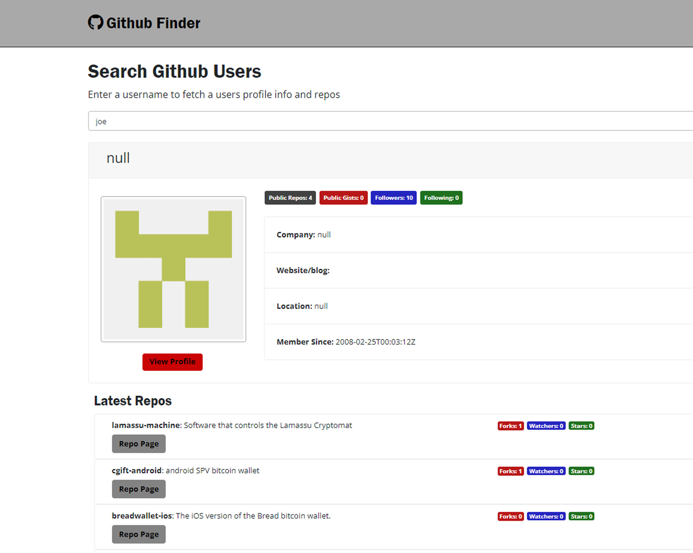

Search Users
This application allows users to search Github profiles to view their information and repositories using the Github api. Once a profile is displayed, users may then view it on Github along with their repositories.
Demo & Code 